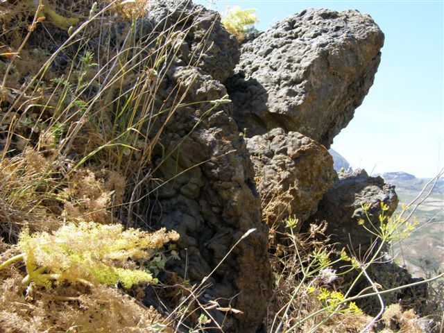

Vulcaniti di Scillato

ITALIANO - Affioramento di lave basaltiche di colore verde scuro‐marrone intercalate nella Formazione Crisanti. (Lias Sup. – Cretaceo medio)
ENGLISH - Outcrop of dark green – brown basaltic lavas intercalated in the Crisanti Formation. (Lias Sup. – mid-Cretaceous)